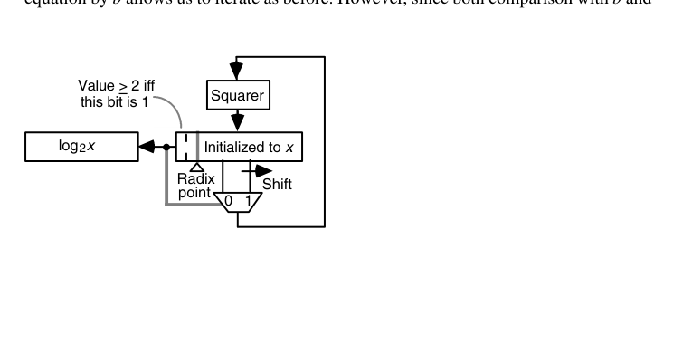

第23章 函数求值的变体（Variations in Function Evaluation）
本章导读
超越函数求值有三大家族：迭代法（CORDIC、Newton——第 21、22 章）、多项式/有理逼近（本章主力）、查表法（第 24 章）。本章讨论通用的预处理（域归约）、对数/指数的具体计算、逼近理论要点，以及把多个运算”熔”成一个数据通路的 merged arithmetic。
23.1 归一化与域归约（Normalization and Range Reduction)
几乎所有函数求值的第一步都是域归约：把任意输入映射到逼近公式好用的小区间。
- 三角函数：周期 + 对称 → \([0, \pi/4]\)（注意 \(\pi\) 的精度——大角度归约需要超精度的 \(\pi\)，Payne-Hanek 算法是经典方案）；
- 指数：\(e^x = 2^{x/\ln 2}\)，拆 \(x/\ln 2 = n + f\)，只剩 \(2^f\)（\(f \in [0,1)\)）要算；
- 对数：\(x = m \cdot 2^e\) → \(\ln x = \ln m + e \ln 2\)，\(m \in [1, 2)\)。
域归约是函数库精度事故的高发区：归约常数（\(\pi/2\)、\(\ln 2\)）的精度不够，大输入下误差直接爆炸。glibc 的 sin() 曾因极端大角度归约而臭名昭著——硬件实现同样要在规格书里写清”输入超过多少时精度不再保证”。
先把收敛方法（convergence method）的术语钉牢：一组递推 \(u^{(i+1)} = f(u^{(i)}, v^{(i)})\)、\(v^{(i+1)} = g(u^{(i)}, v^{(i)})\)，迭代使某个变量 \(u\) 收敛到常数——这叫归一化（normalization）。每拍用一次加法使 \(u\) 归一的叫加性归一化（additive normalization），用一次乘法的叫乘性归一化（multiplicative normalization）。CORDIC 与数字递归除法/开方属前者，收敛除法与倒根 Newton 属后者。乘法比加法慢，但乘性法收敛快（二次 vs. 每拍约 1 位）；而且当乘性项形如 \(1 \pm 2^a\) 时，乘法退化为移位加减——两类方法速度拉平。这就是 21.5 节倒根 Newton、下两节对数/指数迭代的公共形态。
域归约同样分加性/乘性两族。加性例子：算 \(\cos(1.125 \times 2^{47})\)，先减去适当的 \(2\pi\) 整数倍落入 \([-\pi, \pi]\)，再按 \(\cos x = -\cos(x-\pi)\) 之类恒等式送进收敛域；乘性例子：对数的 \(x = 2^q s\) 拆分本质是乘性归约，且当比例常数是对数底的幂时几乎免费。
23.2 计算对数（Computing Logarithms)
- 归约 + 多项式：\(\ln m\)（\(m \in [1, 2)\)）用极小化（minimax）多项式或 \(\ln\frac{1+t}{1-t}\) 变换（收敛更快的级数）；
- 迭代法：CORDIC 双曲模式（22 章）、或基于乘法归一的 BKM 算法（每次乘 \((1 + 2^{-i})\) 使 \(m \to 1\)，累加 \(\ln(1+2^{-i})\) 表值）；
- 查表 + 插值：第 24 章。
乘性归一化求 \(\ln x\) 值得完整写出。维持两条递推：
\[ x^{(i+1)} = x^{(i)}(1 + d_i 2^{-i}), \qquad y^{(i+1)} = y^{(i)} - \ln(1 + d_i 2^{-i}), \qquad d_i \in \{-1, 0, 1\} \]
选 \(d_i\) 使 \(x \to 1\)，则 \(\prod c^{(i)} \approx 1/x\)，于是 \(y^{(m)} = y - \ln \prod c^{(i)} \approx y + \ln x\)——令 \(y^{(0)} = 0\) 即得 \(\ln x\)。\(\ln(1 \pm 2^{-i})\) 是一张小表；收敛域 \(0.21 \le x \le 3.45\)；\(k\) 位精度 \(k\) 拍（大 \(i\) 时 \(\ln(1\pm 2^{-i}) \approx \pm 2^{-i}\)，与 CORDIC 同款 ulp 论证）。任意 \(x = 2^q s\) 拆出整数部分：\(\ln x = 0.693\,147\,180\,q + \ln s\)；换底只需乘常数 \(\log_2 e = 1.442\,695\,041\)。radix-4 版本把 \(d_i\) 扩到 \([-2,2]\)、迭代数砍半，套路仍是”缩放变量 \(u = r^i(x - 1)\) + 与统一阈值（如 \(\pm 13/8\)、\(\pm 5/8\)）比较选数字”。
只需平方器的巧法（Lo–Chen）：求 \(y = \log_2 x\)（\(1 \le x < 2\)）时注意 \(x^2 = 2^{2y} = 2^{(y_{-1}.y_{-2}\cdots)_2}\)，于是 \(x^2 \ge 2 \iff y_{-1} = 1\)。逐位算法：
\[ \text{for } i = 1 \text{ to } l:\quad x := x^2;\ \ \text{if } x \ge 2 \text{ then } y_{-i} := 1,\ x := x/2\ \text{ else } y_{-i} := 0 \]
每拍一次平方、一次比较、偶而一次除 2（移位），硬件就是”平方器 + 寄存器 + 小控制”（见章末图 23.1）。推广到以 \(b\) 为底只需把与 2 的比较换成与 \(b\) 的比较——故只对 2 的幂的底数直接适用，其余底数用换底常数缩放。
23.3 指数运算（Exponentiation)
- \(e^x\)：归约到 \(2^f\) 后用多项式/查表；
- \(x^y = 2^{y \log_2 x}\)：通用幂通过对数-指数链实现（精度分析要小心两级误差叠加）；
- 整数幂：平方-乘（square-and-multiply）——密码学模幂（12.4 节 Montgomery 的用武之地），硬件上是”乘法器 + 状态机”的经典考题。
指数与对数是对偶的加性归一化迭代：
\[ x^{(i+1)} = x^{(i)} - \ln(1 + d_i 2^{-i}), \qquad y^{(i+1)} = y^{(i)}(1 + d_i 2^{-i}), \qquad d_i \in \{-1, 0, 1\} \]
选 \(d_i\) 使 \(x \to 0\)，则 \(\sum \ln c^{(i)} \approx x\)，\(y^{(m)} = y \prod c^{(i)} = y\, e^{\sum \ln c^{(i)}} \approx y\, e^x\)——令 \(y^{(0)} = 1\) 得 \(e^x\)。收敛域 \(-1.24 \le x \le 1.56\)。这里有个漂亮的提前收尾：当剩余 \(x^{(j)}\) 足够小（前 \(k/2\) 位为 0）时 \(\ln(1+\varepsilon) \approx \varepsilon\)，剩余全部迭代合并为一次真乘法 \(y^{(j+1)} = y^{(j)}(1 + x^{(j)})\)、\(x\) 直接清零——\(k\) 拍缩成 \(k/2\) 拍加 1 乘。
超出演算域时先做乘性归约：\(x = 2^q s\) 时 \(e^x = (e^s)^{2^q}\)，用连续平方（\(q>0\)）或开方（\(q<0\)）消化 \(q\)；更高效的做法是预乘 \(\log_2 e\) 拆出 \(h + f\)，则 \(e^x = 2^h e^{f \ln 2}\)——小数部分送进上面的迭代，整数部分变成指数域调整（移位）。
通用幂 \(x^y = e^{y \ln x}\) 由对数、一次乘法、指数三段串联。精度要小心：\(y \ln x\) 的相对误差 \(\varepsilon\) 经指数环节放大为约 \(|y \ln x| \cdot \varepsilon\) 的最终相对误差，两段误差是相乘放大的（22 章习题 22.21 的教训）。整数幂则走平方-乘：\(x^{25} = ((((x)^2x)^2)^2)^2x\)，4 平方 2 乘，对应 \(25 = (11001)_2\) 的扫描；常数幂还能借鉴 9.5 节乘常数的优化——\(15 = (1111)_2\) 经 Booth 重编码成 \((100\bar{1})_2\) 变 3 平方 1 除法，或因式分解 \(15 = 3 \times 5\) 变 3 平方 2 乘（\(x^3\) 存临时寄存器）；更一般地 \(y = dq + s\) 时 \(x^y = x^s (x^d)^q\)，分治进寄存器。模幂把每步乘法换成 Montgomery 乘（15.4 节），其余不变。
23.4 再看除法与开方（Division and Square-Rooting, Again)
从”函数求值”视角回看：\(1/x\) 与 \(1/\sqrt{x}\) 都是自收敛迭代函数——Newton 迭代自带误差平方消失性质。本节点题：第 13-16、21 章的数字递归与收敛法，与第 22 章 CORDIC、本章多项式逼近，共同构成函数求值的方法谱系——选型三问：有无可复用的乘法器？精度要求多少？吞吐还是延迟优先？
把视角拔高，除法本身就是”加性归一化求 \(s \to 0\)“：
\[ s^{(i+1)} = s^{(i)} - \gamma^{(i)} \times d, \qquad q^{(i+1)} = q^{(i)} + \gamma^{(i)} \]
\(s^{(0)} = z\)、\(q^{(0)} = 0\)，选 \(\gamma^{(i)}\) 使 \(s\) 收敛到 0，商即 \(q^{(m)}\)。小数版的缩放形式 \(s^{(i+1)} = r\,s^{(i)} - \gamma^{(i)} d\)、\(q^{(i+1)} = r\,q^{(i)} + \gamma^{(i)}\) 正是第 13-15 章所有数字递归除法的母体——\(\gamma^{(i)}\) 取商数字时，\(q\) 的更新加法退化为拼接。CORDIC 除法（线性向量模式）同样落在这个框架里。
开方也有乘性/加性两个新变体。乘性归一化开方：令 \(x^{(0)} = y^{(0)} = z\)，迭代 \(x^{(i+1)} = x^{(i)}(1 + d_i 2^{-i})^2\)、\(y^{(i+1)} = y^{(i)}(1 + d_i 2^{-i})\)；当 \(x \to 1\)（即 \(\prod(1 + d_i 2^{-i})^2 \to 1/z\)）时 \(y \to \sqrt{z}\)。选 \(d_i \in \{-1, 0, 1\}\)，把 \(x\) 换成缩放变量 \(u^{(i)} = 2^i (x^{(i)} - 1)\) 后各拍比较阈值统一为 \(\pm\alpha\)。加性归一化开方：令 \(x^{(0)} = z\)、\(y^{(0)} = 0\)，迭代
\[ x^{(i+1)} = x^{(i)} + 2d_i y^{(i)} 2^{-i} - d_i^2 2^{-2i}, \qquad y^{(i+1)} = y^{(i)} - d_i 2^{-i} \]
\(x \to 0\) 意味着 \(z - (\textstyle\sum c^{(i)})^2 \to 0\)，\(y\) 收敛到 \(\sqrt{z}\)。两族都有 radix-4 版本；它们的迭代骨架与 21 章的数字递归开方同源，只是”选数字的依据”从除数/试减项换成了统一的比较常数。
23.5 逼近函数的使用（Use of Approximating Functions)
多项式逼近是软件数学库（libm）的绝对主力，也在硬件协处理器中广泛使用：
- 极小化多项式（minimax）：在给定区间与次数下使最大误差最小——Remez 算法求解；比泰勒展开”性价比”高得多（同次数下误差小几个数量级）；
- Chebyshev 展开：接近极小化的实用替代，系数有闭式；
- 有理函数逼近（Padé）：同阶数下逼近能力更强，但需要除法——硬件不友好；
- 分段逼近：区间切片 + 每段低次多项式（表存系数）——第 24 章 multipartite 的先声。
理论基础两条。其一，Taylor–Maclaurin 级数给出”现成的”多项式（\(\sin x\)、\(e^x\)、\(\tanh^{-1} x\) 等的展开式都是标准表），系数简单时甚至可以现场递推（如 \(\sin x\) 的 \(c^{(i)} = c^{(i-1)}/[2i(2i+1)]\)）。但泰勒不是终点：它在展开点附近极好、离点越远越差。教科书级例子：\(\ln x\) 用 \(y = 1 - x\) 的 Maclaurin 级数在 \(x \approx 1\) 时收敛飞快，\(x \approx 2\)（\(y \approx -1\)）时要几十项才够 32 位精度；换成 \(z = \frac{x-1}{x+1}\) 的展开（\(x \approx 2\) 时 \(z \approx 1/3\)），几项就收敛。其二，极小化（minimax）多项式干脆放弃”在一点展开”，在整个区间上压最大误差——同次数下比泰勒好几个数量级，系数由 Remez 算法求出；Chebyshev 展开是有闭式系数的近似替代。
求值一律用 Horner 格式（\(m\) 次 FMA 串行）。再进一步，把输入劈成高低两段 \(x = x_H + 2^{-t} x_L\)，在 \(x_H\) 处做泰勒展开：
\[ f(x) \approx f(x_H) + 2^{-t} x_L\, f'(x_H) + \cdots \]
高阶项衰减极快（因子 \(2^{-jt}/j!\)），通常一两项就够；而 \(f(x_H)\)、\(f'(x_H)\) 恰好可以查表——这正通向 24 章的插值存储器。最后一档是有理逼近：两个五次多项式之比，Horner 求值分子分母共 10 乘 10 加 1 除——逼近能力更强，但只有在快速除法/倒数单元可复用时才划算。
多项式求值用 Horner 格式（\(((c_n x + c_{n-1})x + \cdots)x + c_0\)）——天然的 FMA 链！一个 \(n\) 次多项式 = \(n\) 个 FMA 串行，延迟 \(n \times T_{FMA}\)。要吞吐就展开成 Estrin 格式（并行度更高）。这就是”数学库函数硬件化”的标准姿势。
23.6 融合算术（Merged Arithmetic)
思想：当算法是一整段算术（如 FIR 的一段、复数乘加链），不要逐运算调用标准单元，而是把整个表达式作为一个数据通路统一优化：
- 中间结果不做完整舍入/规格化，保留进位保存/冗余形态直通到底；
- 常数系数的乘法用 CSD 网络（9.5 节）；
- 最终的位级优化（截断、补偿）在整个表达式层面统一做。
收益：省掉中间 CPA 与舍入逻辑，延迟/面积/功耗全面下降。代价：设计自动化程度低、验证复杂——是”手工打磨 DSP 内核”的高级技法，在 FIR/FFT 硬核中回报丰厚。
一个完整的算例说明它的威力。算内积累加 \(z = z^{(0)} + x^{(1)}y^{(1)} + x^{(2)}y^{(2)} + x^{(3)}y^{(3)}\)（4 位无符号 \(x, y\)，8 位 \(z^{(0)}\)）：逐运算分解要三个 4×4 乘法器加一串加法器；merged 做法是把三个部分积点阵与 \(z^{(0)}\) 直接堆成一个点阵，用 Wallace/Dadda 规则一次性归约。归约后关键路径只有 1 个与门 + 5 个全加器 + 一个 5 位 CPA；总成本 48 个与门、46 个全加器、4 个半加器加 5 位 CPA——显著低于三个独立乘法器的合计。前提是中间积 \(x^{(i)} y^{(i)}\) 不作他用，否则中间值必须完整成形，融合就无从谈起。
同一思想还能造出意外部件：汉明重量比较器（判断向量中 1 的个数与某常数的大小）用累积并行计数阵列直接实现，比”计数器 + 比较器”两件套更快更省。它的边界条件也很清楚：表达式必须固定（位宽、结构不能参数化），设计/验证成本高——适合手磨硬核，不适合做通用积木。
本章小结
- 域归约是函数求值的第一道工序，也是精度事故高发区。
- 对数/指数：归约 + 极小化多项式 + Horner/FMA 是主流配方。
- 选型三问：乘法器有无、精度、吞吐 vs. 延迟。
- Merged arithmetic：整段表达式统一优化，DSP 内核的高级技法。
原书插图
